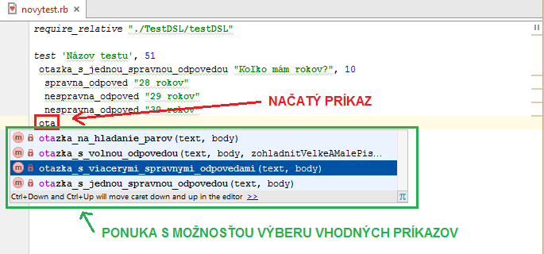
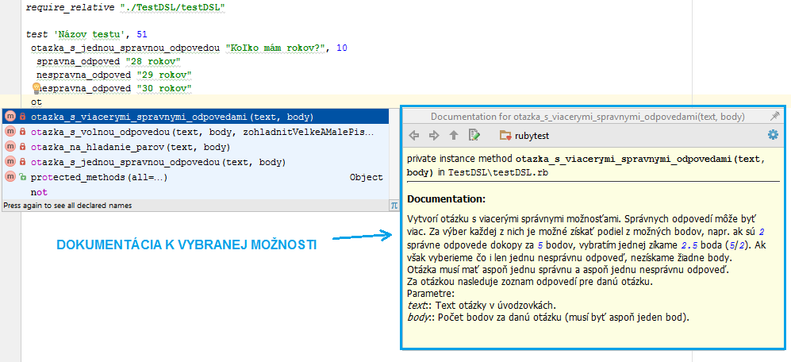
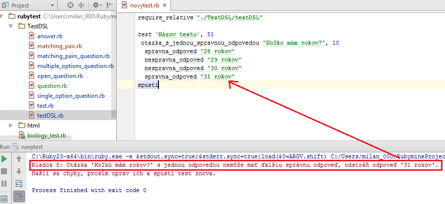

Prostredie RubyMine
V časti Vytvorenie vety sme už videli ako vieme využiť prostredie RubyMine na vytvorenie nového testu. V tejto časti si ukážeme ešte niekoľko skvelých funkcií, ktoré môžeš pri tvorbe testu využiť.
Dopĺňanie kódu
Jedným z mocných nástrojov prostredí je dopĺňanie kódu. V jazyku Test-it! ti táto funkcionalita umožní písať definíciu oveľa rýchlejšie a spoľahlivejšie. Keď je kurzor na písanie na mieste, kde by mal nasledovať nejaký príkaz, stlačením kombinácie Ctrl + Medzerovník ti prostredie vyroluje ponuku s možnosťami, čo tam môžeš vpísať. Možností je vo všeobecnosti síce priveľa, ale ak začneš písať príkaz, ktorý chceš napísať, prostredie tieto možnosti zúži na príkazy začínajúce sa na daný text (viď nasledujúci obrázok, červeným je zvýraznený začiatok príkazu, čo som stihol napísať, a zeleným ponuka príkazov, ktoré začínajú na daný text). Šípkami hore a dole vieme spomedzi možností vyberať. Potvrdením Enterom sa na dané miesto vloží vybraný príkaz (vďaka čomu ho nemusíme celý písať).
{kind=link}
Dokumentácia
Ďalšou pomôckou, ktorú viete v prostredí RubyMine využiť, je rýchla dokumentácia priamo v prostredí. Ak máš kurzor na písanie nad nejakým príkazom, resp. ak si v menu s ponukou na dopĺňanie kódu nad nejakým príkazom, a stlačíš kombináciu Ctrl + Q, ukáže sa ti okienko s dokumentáciou, opisujúcou daný príkaz. Viď príklad na nasledujúcom obrázku:
{kind=link}
Podpora chýb
Nedodržanie niektorých pravidiel pre písanie testov môže spôsobiť chybu a test sa nebude dať spustiť. V takom prípade prostredie chybu ohlási. Vezmime si príklad, že omylom definujeme dve správne odpovede v otázke s jednou povolenou správnou odpoveďou. V takom prípade sa pri pokuse o spustenie testu vypíše nasledovná chyba:
{kind=link}
Opis chyby definuje riadok, na ktorom došlo k chybe a to, ako k chybe došlo. Taktiež navrhuje možné riešenia (zmazanie druhej správnej odpovede, resp. zmena typu otázky na takú, ktorá podporuje viacero správnych odpovedí).